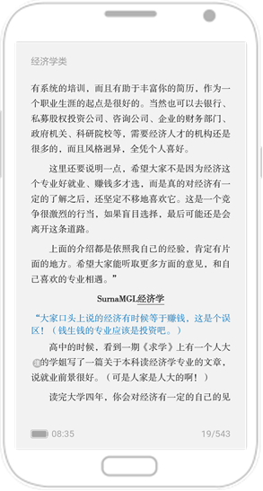
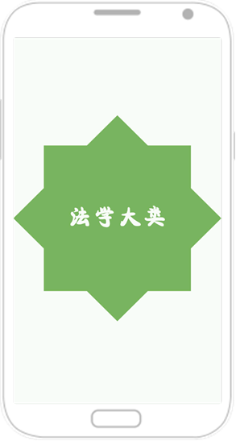
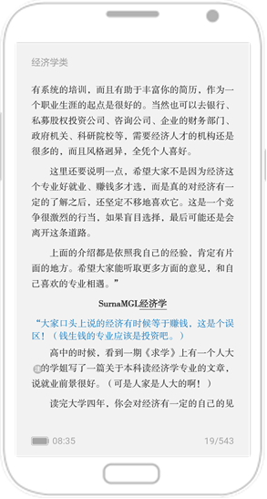
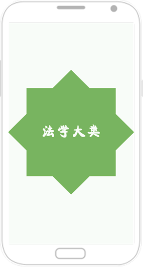

为什么写这本书
网络爬虫其实很早就出现了，最开始网络爬虫主要应用在各种搜索引擎中。在搜索引擎中，主要使用通用网络爬虫对网页进行爬取及存储。
随着大数据时代的到来，我们经常需要在海量数据的互联网环境中搜集一些特定的数据并对其进行分析，我们可以使用网络爬虫对这些特定的数据进行爬取，并对一些无关的数据进行过滤，将目标数据筛选出来。对特定的数据进行爬取的爬虫，我们将其称为聚焦网络爬虫。在大数据时代，聚焦网络爬虫的应用需求越来越大。
目前在国内Python网络爬虫的书籍基本上都是从国外引进翻译的，国内的本版书籍屈指可数，故而我跟华章的副总编杨福川策划了这本书。本书的撰写过程中各方面的参考资料非常少，因此完成本书所花费的精力相对来说是非常大的。
本书从系统化的视角，为那些想学习Python网络爬虫或者正在研究Python网络爬虫的朋友们提供了一个全面的参考，让读者可以系统地学习Python网络爬虫的方方面面，在理解并掌握了本书的实例之后，能够独立编写出自己的Python网络爬虫项目，并且能够胜任Python网络爬虫工程师相关岗位的工作。
同时，本书的另一个目的是，希望可以给大数据或者数据挖掘方向的从业者一定的参考，以帮助这些读者从海量的互联网信息中爬取需要的数据。所谓巧妇难为无米之炊，有了这些数据之后，从事大数据或者数据挖
查看全部↓
掘方向工作的读者就可以进行后续的分析处理了。
本书的主要内容和特色
本书是一本系统介绍Python网络爬虫的书籍，全书注重实战，涵盖网络爬虫原理、如何手写Python网络爬虫、如何使用Scrapy框架编写网络爬虫项目等关于Python网络爬虫的方方面面。
本书的主要特色如下：
总之，在理解本书内容并掌握书中实例之后，读者将能胜任Python网络爬虫工程师方向的工作并学会各种类型网络爬虫项目的编写。此外，本书对于大数据或数据挖掘方向的从业者也非常有帮助，比如可以利用Python网络爬虫轻松获取所需的数据信息等。
本书面向的读者
如何阅读本书
本书分为四篇，共计20章。
第一篇为理论基础篇（第1～2章），主要介绍了网络爬虫的基础知识，让大家从零开始对网络爬虫有一个比较清晰的认识。
第二篇为核心技术篇（第3～9章），详细介绍了网络爬虫实现的核心技术，包括网络爬虫的工作原理、如何用Urllib库编写网络爬虫、爬虫的异常处理、正则表达式、爬虫中Cookie的使用、手写糗事百科爬虫、手写链接爬虫、手写微信爬虫、手写多线程爬虫、浏览器伪装技术、Python网络爬虫的定向爬取技术及实例等。学完这一部分内容，读者就可以写出自己的爬虫了。这部分的爬虫编写采用的是一步步纯手写的方式进行的，没有采用框架。
第三篇为框架实现篇（第10～17章），主要详细介绍了如何用框架实现Python网络爬虫项目。使用框架实现Python网络爬虫项目相较于手写方式更加便捷，主要包括Python爬虫框架分类、Scrapy框架在各系统中的安装以及如何避免各种“坑”、如何用Scrapy框架编写爬虫项目、Scrapy框架架构详解、Scrapy的中文输出与存储、在Scrapy中如何使用for循环实现自动网页爬虫、如何通过CrawlSpider实现自动网页爬虫、如何将爬取的内容写进数据库等。其中第12章为基础部分，读者需要着重掌握。
第四篇为项目实战篇（第18～20章），分别讲述了博客类爬虫项目、图片类爬虫项目、模拟登录爬虫项目的编程及实现。其中，也会涉及验证码处理等方面的难点知识，帮助读者通过实际的项目掌握网络爬虫项目的编写。
勘误和支持
由于作者的水平有限，书中难免有一些错误或不准确的地方，恳请各位读者不吝指正。
相关建议各位可以通过微博@韦玮pig或通过QQ公众号a67899或微信公众平台weijc7789（可以直接扫描下方二维码添加）进行反馈，也可以直接向邮箱ceo@iqianyue.com发送邮件，期待能够收到各位读者的意见和建议，欢迎来信。
致谢
感谢机械工业出版社华章公司的副总编杨福川老师与编辑李艺老师，在近一年的时间里，是你们一次次在我遇到困难的时候，给予我鼓励，让我可以坚持写下去。创作一本图书是非常艰苦的，除了技术知识等因素之外，还需要非常大的毅力。特别感谢杨福川在写作过程中对我各方面的支持，尤其是对我毅力的培养。
感谢CSDN、51CTO与极客学院，因为你们，让我在这个领域获得了更多的学员与支持。
感谢恩师何云景教授对我创业方面的帮助，因为有您，我才拥有了一个更好的创业开端及工作环境。
特别致谢
最后，需要特别感谢的是我的女友，因为编写这本书，少了很多陪你的时间，感谢你的不离不弃与理解包容。希望未来可以加倍弥补你那些错过吃的美食和那些错过逛的街道。
同时，也要感谢你帮我完成书稿的校对工作，谢谢你的付出与支持。因为有了你默默的付出，我才能坚定地走下去；因为有了你不断的支持，我才可以安心地往前冲。
感谢爷爷从小对我人生观、价值观的培养，您是一个非常有思想的人。
感谢远方的父母、叔叔、姐姐，那些亲情的陪伴是我最珍贵的财富。
谨以此书献给热爱Python的朋友们！
收起全部↑
随着大数据时代的来临，网络爬虫在互联网中的地位将越来越重要。互联网中的数据是海量的，如何自动高效地获取互联网中我们感兴趣的信息并为我们所用是一个重要的问题，而爬虫技术就是为了解决这些问题而生的。我们感兴趣的信息分为不同的类型：如果只是做搜索引擎，那么感兴趣的信息就是互联网中尽可能多的高质量网页；如果要获取某一垂直领域的数据或者有明确的检索需求，那么感兴趣的信息就是根据我们的检索和需求所定位的这些信息，此时，需要过滤掉一些无用信息。前者我们称为通用网络爬虫，后者我们称为聚焦网络爬虫。
1.1 初识网络爬虫
网络爬虫又称网络蜘蛛、网络蚂蚁、网络机器人等，可以自动化浏览网络中的信息，当然浏览信息的时候需要按照我们制定的规则进行，这些规则我们称之为网络爬虫算法。使用Python可以很方便地编写出爬虫程序，进行互联网信息的自动化检索。
搜索引擎离不开爬虫，比如百度搜索引擎的爬虫叫作百度蜘蛛（Baiduspider）。百度蜘蛛每天会在海量的互联网信息中进行爬取，爬取优质信息并收录，当用户在百度搜索引擎上检索对应关键词时，百度将对关键词进行分析处理，从收录的网页中找出相关网页，按照一定的排名规则进行排序并将结果展现给用户。在这个过程中，百度蜘蛛起到了至关重要的作用。那么，如何覆盖互联网中更多的优质网页？又如何筛选这些重复的页面？这些都是由百度蜘蛛爬虫的算法决定的。采用不同的算法，爬虫的运行效率会不同，爬取结果也会有所
查看全部↓
差异。所以，我们在研究爬虫的时候，不仅要了解爬虫如何实现，还需要知道一些常见爬虫的算法，如果有必要，我们还需要自己去制定相应的算法，这些在后面都会为大家详细地讲解，在此，我们仅需要对爬虫的概念有一个基本的了解。
除了百度搜索引擎离不开爬虫以外，其他搜索引擎也离不开爬虫，它们也拥有自己的爬虫。比如360的爬虫叫360Spider，搜狗的爬虫叫Sogouspider，必应的爬虫叫Bingbot。
如果想自己实现一款小型的搜索引擎，我们也可以编写出自己的爬虫去实现，当然，虽然可能在性能或者算法上比不上主流的搜索引擎，但是个性化的程度会非常高，并且也有利于我们更深层次地理解搜索引擎内部的工作原理。
大数据时代也离不开爬虫，比如在进行大数据分析或数据挖掘时，我们可以去一些比较大型的官方站点下载数据源。但这些数据源比较有限，那么如何才能获取更多更高质量的数据源呢？此时，我们可以编写自己的爬虫程序，从互联网中进行数据信息的获取。所以在未来，爬虫的地位会越来越重要。
1.2 为什么要学网络爬虫
在上一节中，我们初步认识了网络爬虫，但是为什么要学习网络爬虫呢？要知道，只有清晰地知道我们的学习目的，才能够更好地学习这一项知识，所以在这一节中，我们将会为大家分析一下学习网络爬虫的原因。
当然，不同的人学习爬虫，可能目的有所不同，在此，我们总结了4种常见的学习爬虫的原因。
1）学习爬虫，可以私人订制一个搜索引擎，并且可以对搜索引擎的数据采集工作原理进行更深层次地理解。
收起全部↑


 


